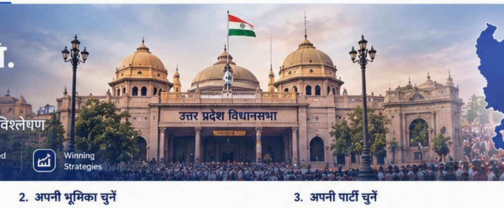

01 · STRATEGY
राजनीतिक परामर्श
अभियान योजना, नेतृत्व की स्थिति, मुद्दा-मानचित्रण, मतदाता वर्गीकरण और चुनावी रोडमैप।
और जानें →
उम्मीदवारों, राजनीतिक दलों और अभियान टीमों के लिए डेटा, शोध, तकनीक और रणनीति का एकीकृत मॉडल।
हर सेवा का उद्देश्य: बेहतर जानकारी → स्पष्ट निर्णय → प्रभावी निष्पादन।
अभियान योजना, नेतृत्व की स्थिति, मुद्दा-मानचित्रण, मतदाता वर्गीकरण और चुनावी रोडमैप।
और जानें →360° अभियान संचालन, फील्ड मॉनिटरिंग, कार्यक्रम, स्वयंसेवक समन्वय और प्रदर्शन ट्रैकिंग।
और जानें →जनसांख्यिकी, राजनीतिक रुझान, स्थानीय मुद्दे, हितधारक और प्रतिद्वंद्वी विश्लेषण।
और जानें →बेसलाइन सर्वे, ओपिनियन पोल, मतदाता भावना, उम्मीदवार मूल्यांकन और सार्वजनिक प्रतिक्रिया का अध्ययन।
और जानें →निर्वाचन क्षेत्र-स्तरीय प्रोफाइल, परिणाम, मार्जिन, प्रतिस्पर्धा और रणनीतिक संकेत।
403 सीटें देखें →बूथ प्रदर्शन, प्राथमिकता क्षेत्र, फील्ड संगठन और मतदान-दिवस की तैयारी।
रिपोर्ट उदाहरण →सोशल मीडिया रणनीति, डिजिटल सामग्री, मीडिया योजना, प्रतिष्ठा और संकट संचार।
और जानें →पूर्वानुमान, भावना विश्लेषण, ऑटोमेशन, AI सहायक और निर्णय-सहायक डैशबोर्ड।
तकनीक पर बात करें →रीयल-टाइम मॉनिटरिंग, CRM, GIS मैपिंग, डैशबोर्ड और अभियान रिपोर्टिंग।
वार रूम चर्चा →डेटा से रणनीतिक सलाह तक — अलग-अलग टूल के बजाय एक connected workflow।

रीयल-टाइम संकेत, field reports, dashboards और strategic monitoring — आपकी टीम के लिए एक unified command layer।
अपनी सीट, अभियान या संगठन के लिए गोपनीय रणनीतिक चर्चा शुरू करें।